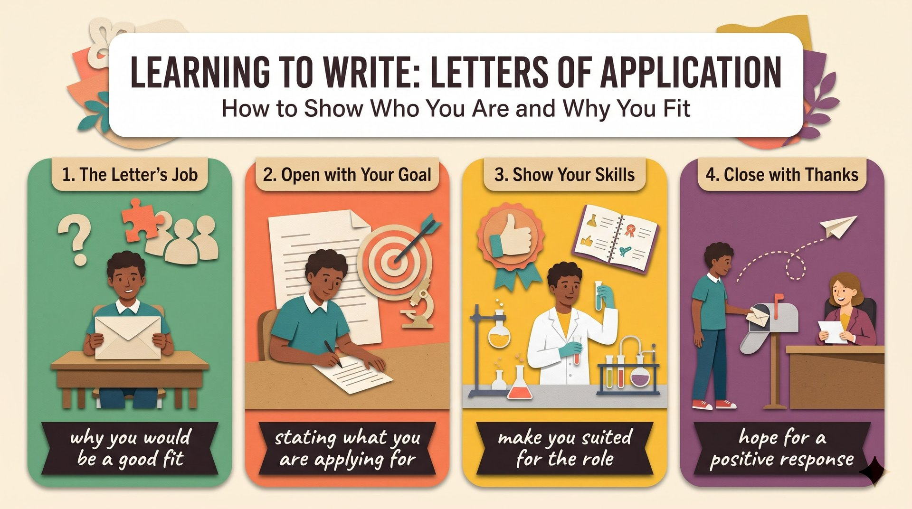

去年春天，我在網路上看到動物醫院的暑期實習廣告。我很想申請，卻從沒寫過申請信。
I had never written a letter我的初稿滿是誇大，把自己寫得像世界級名醫。老師讀到一半笑了出來，要我誠實一點。
full of exaggeration我重寫了一封有熱忱又誠實的信，說明在收容所當志工的經驗如何加深我對照顧動物的了解。
made me suited for the position我感謝經理考慮我的申請。一週後收到正面回覆，這次經驗也讓我變得更有自信。
received a positive responseI (S) + found (V) + an online ad (O)。
find - found - found；an online ad 的 an 配 online 的母音；ad 是 advertisement 的縮寫。
Last spring,（時間副詞）I found an online ad（主幹）for a summer internship（介系詞片語）at a local animal hospital.（介系詞片語（地點））語塊 1（去年春天）➔ 語塊 2 前半（我在網路上看到）➔ 語塊 4 提前（當地動物醫院）➔ 語塊 3 提前（暑期實習的）➔ 語塊 2 後半（廣告）
時間詞放前面，先翻「去年春天，我在網路上看到一則」。
I found。for ...、at ... 兩個介系詞把細節掛上去，不用加任何連接詞。
ad＝advertisement；local（當地的）。I (S1) + was (V1) + eager (C)，but I (S2) + had never written (V2) + a letter (O)。
be eager to V；had never + p.p.；write - wrote - written；before 放句尾表「以前」。
I was eager to apply,（主幹一）but I had never written（主幹二）a letter of application before.（受詞＋時間）語塊 1（我很想申請）➔ 語塊 2（但我從來沒寫過）➔ 語塊 3（申請信）
這句順著翻：「我很想申請」。
had + p.p. 表過去某時之前。be eager to V＝be keen to V。My first draft (S1) + was (V1) + full of exaggeration (C)，and it (S2) + made (V2) + me (O) + sound ... (O.C.)。
make + O + 原形動詞，sound 是原形；like 是介系詞。
be full of N；make + O + V，不加 to；sound like + N；world-famous 是複合形容詞。
My first draft was full of exaggeration,（主幹一）and it made me sound（主幹二）like a world-famous doctor.（介系詞片語）語塊 1（我的初稿滿是誇大的內容）➔ 語塊 2（把我寫得）➔ 語塊 3（像世界級名醫）
先翻前半：「我的初稿滿是誇大的內容」。
make me sound：受詞後面接原形動詞，也是常見用法，表示「使某人做出某動作」。make + O + V／Adj.／N.；be full of＝be filled with。my teacher (S) + laughed (V1) + and told (V2) + me (O) + to be honest。
While reading it 由 While she/he was reading it 簡化；and 連接兩個動詞。
while + V-ing；tell + O + to V；honest 的 h 不發音，所以用 an honest answer。
While reading it,（while + V-ing）my teacher laughed（主幹一）and told me to be honest.（主幹二）語塊 1（老師讀著讀著）➔ 語塊 2（笑了出來）➔ 語塊 3（要我誠實一點）
再接：「笑了出來，要我誠實一點」。
my teacher，讀的就是老師。While my teacher was reading it，主詞相同，省略後改 reading。while + V-ing。tell + O + to V。I (S) + started (V1) + again + and wrote (V2) + an ... letter (O)，後接分詞 explaining。
explaining 是分詞構句，由 and I explained 簡化；what 引導名詞子句當受詞。
enthusiastic but honest，but 連接兩個形容詞；about + V-ing；excite 的主詞是事。
So I started again（主幹一）and wrote an enthusiastic but honest letter,（主幹二）explaining what excited me about working with animals.（分詞構句）語塊 1（於是我重新開始）➔ 語塊 2（寫了一封有熱忱又誠實的信）➔ 語塊 3（說明和動物一起工作為什麼讓我興奮）
So 翻「於是」，帶出下一個動作：「於是我重新開始，寫了一封有熱忱又誠實的信」。
explaining 的主詞是前面的 I，還原是 and I explained。what excited me：往右看 excited 前沒有主詞，what 就是主詞。
, V-ing ... 補充同一個主詞的動作。I (S) + also described (V) + how ... (O)。
deepen one's understanding of N；動名詞當主詞；shelter（收容所）。
I also described（主幹）how volunteering at a shelter（how 子句主詞）had deepened my understanding of animal care.（how 子句動詞）語塊 1（我也描述了）➔ 語塊 2（當志工的經驗如何）➔ 語塊 3（加深對照顧動物的了解）
最後接：「我對照顧動物的了解」。
volunteering at a shelter 整段是主詞，動詞是 had deepened。volunteer（當志工）；animal care（動物照顧）。That experience (S) + made (V) + me (O) + suited ... (O.C.)，I wrote 是插入語。
make + O + Adj.；插入語前後要有逗號；suited for the position。
I wrote（插入語）That experience（主詞）made me suited for the position.（make + O + 形容詞）語塊 1 提前（我在信中寫道）➔ 語塊 2（那段經驗）➔ 語塊 3（讓我適任這個職位）
再翻主句：「那段經驗讓我適任這個職位」。
I wrote，先括起來。That experience made me suited for the position，主幹就清楚了。
make + O + Adj.；插入語：I think／I believe／I wrote。I (S) + thanked (V1) + and said (V2) + (that) ...。
thank sb for V-ing；be looking forward to + V-ing；contribute to N。
At the end,（時間片語）I thanked the manager for considering my application（主幹一）and said I was looking forward to contributing to the team.（主幹二）語塊 1（在信的結尾）➔ 語塊 2（我感謝經理考慮我的申請）➔ 語塊 3（並表示我很期待為團隊貢獻心力）
先定位：「在信的結尾」。
and 後面：「並表示我很期待為團隊貢獻心力」。
look forward to + V-ing。contribute to N。I (S) + received (V) + a positive response (O)。
a week later（一週後）；receive a response；positive 指「正面的、肯定的」。
A week later,（時間片語）I received a positive response.（主幹）語塊 1（一週後）➔ 語塊 2（我收到了正面的回覆）
I received 就夠了，讀者會感受到結果揭曉的節奏。
later：從過去某時算起；in a week：從現在算起。I (S1) + got (V1) + the opportunity (O)，and the experience (S2) + made (V2) + me (O) + more confident (O.C.)。
opportunity to V；make + O + Adj.，比較級也可以；there 指動物醫院。
I got the opportunity to work there,（主幹一）and the experience（主幹二的主詞）made me more confident.（make + O + 形容詞）語塊 1（我得到了在那裡工作的機會）➔ 語塊 2（這次經驗）➔ 語塊 3（也讓我變得更有自信）
I got the opportunity，右邊 the experience made me。make + O + Adj.。confident（有自信的）。1. 請選出最適合填入 (1) 的字：
be eager to V。2. 請選出最適合填入 (2) 的字：
While + V-ing，主詞都是 I；during 只接名詞。3. 請選出最適合填入 (3) 的字：
deepen one's understanding。4. 請選出最適合填入 (4) 的字：
look forward to + V-ing。5. 請選出最適合填入 (5) 的字：
a positive response：正面回覆。6. The essay is full of ________; no one can really run 100 kilometers in an hour.
exaggeration（誇大）。7. This summer I want to ________ for a job at the local bookstore.
apply for a job。8. The fans were very ________ about the concert and sang along to every song.
be enthusiastic about N。9. Living abroad gave her the ________ to learn a new language.
opportunity to V。10. 下列哪一句文法正確？
had never + p.p.，write 的 p.p. 是 written。11. 「那份工作讓我更有耐心。」最佳英譯是：
make + O + Adj.。12. 下列哪一句文法正確？
13. Why did the teacher laugh at the writer's first draft?
14. What helped the writer understand animal care better?
15. What is the result of the second letter?